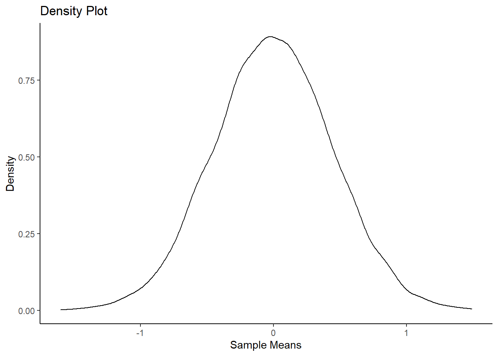
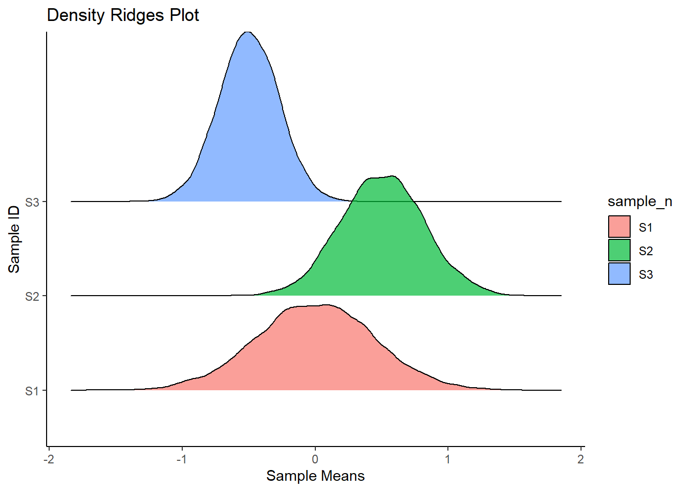
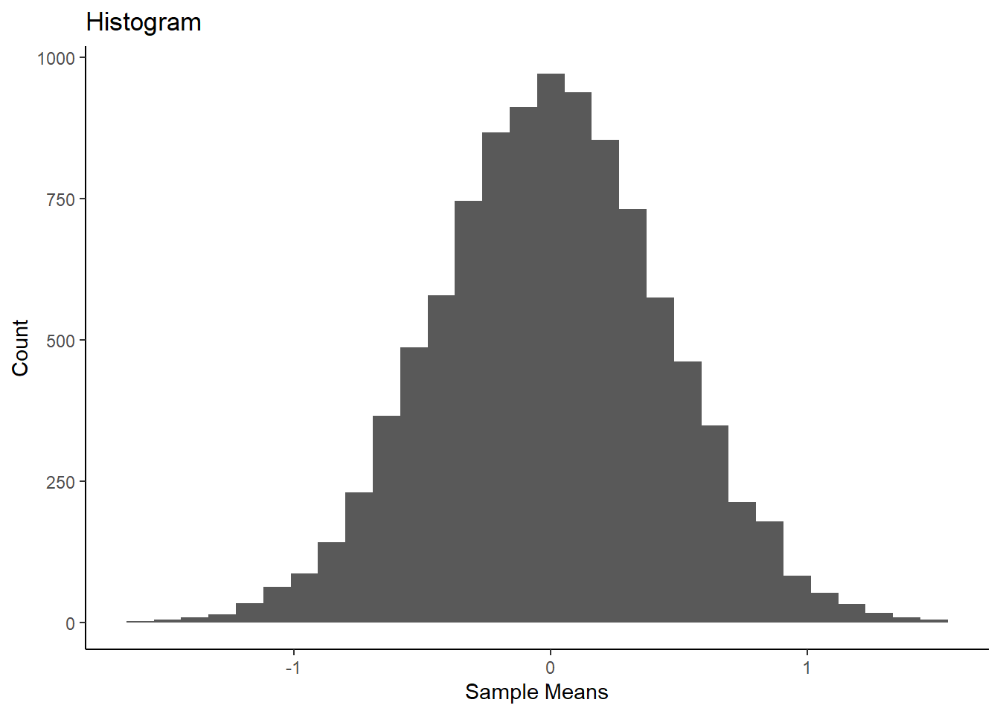
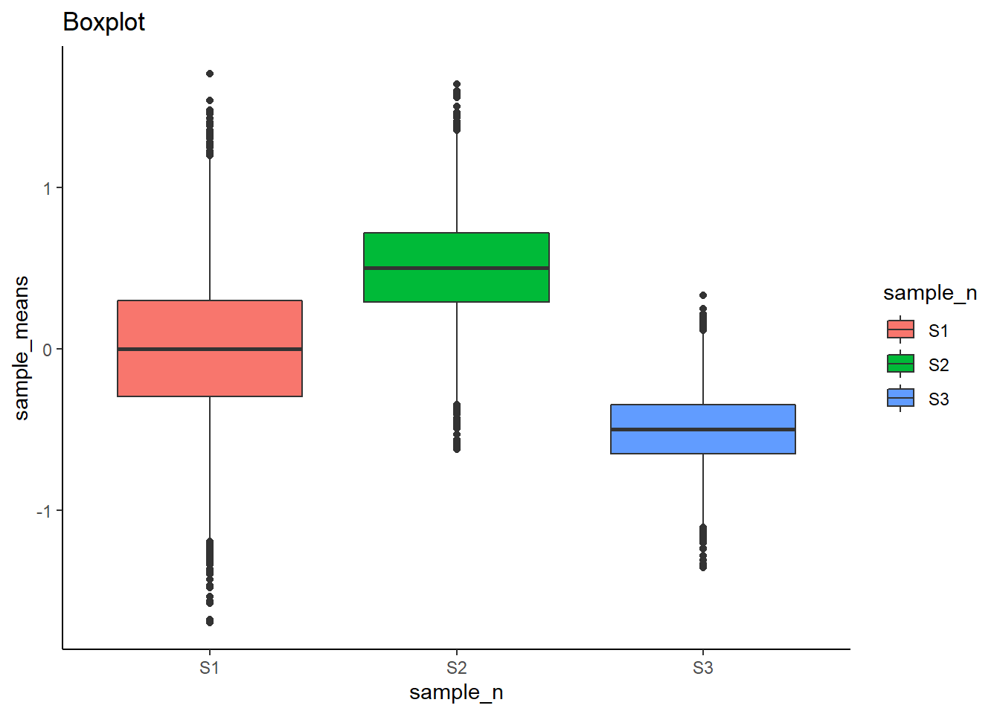
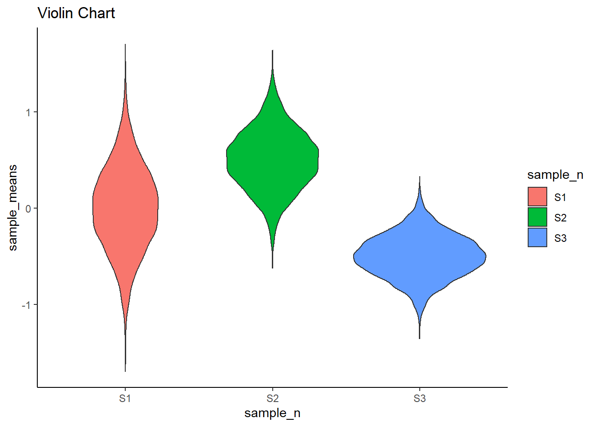
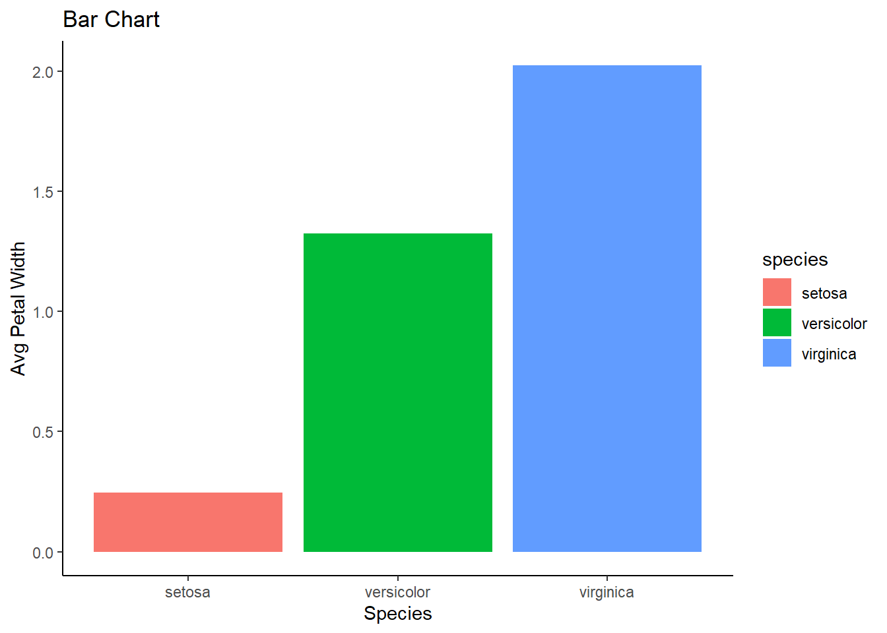
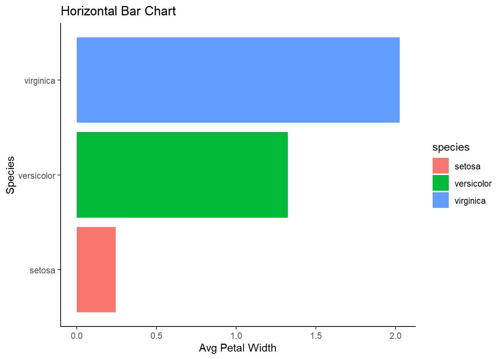
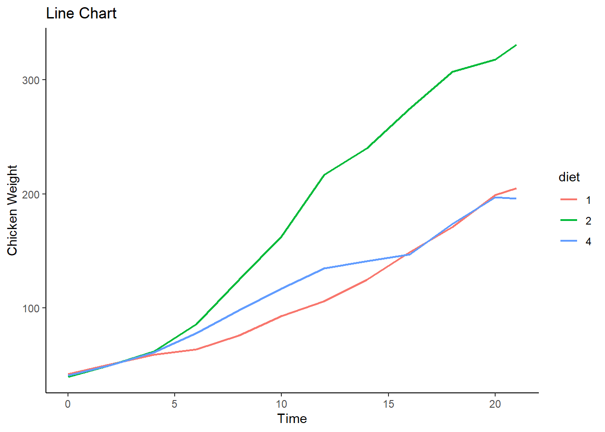
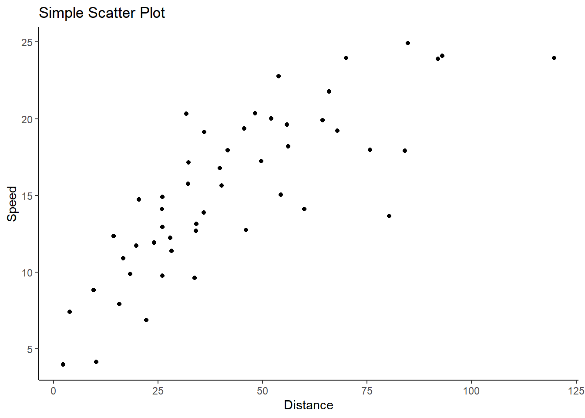
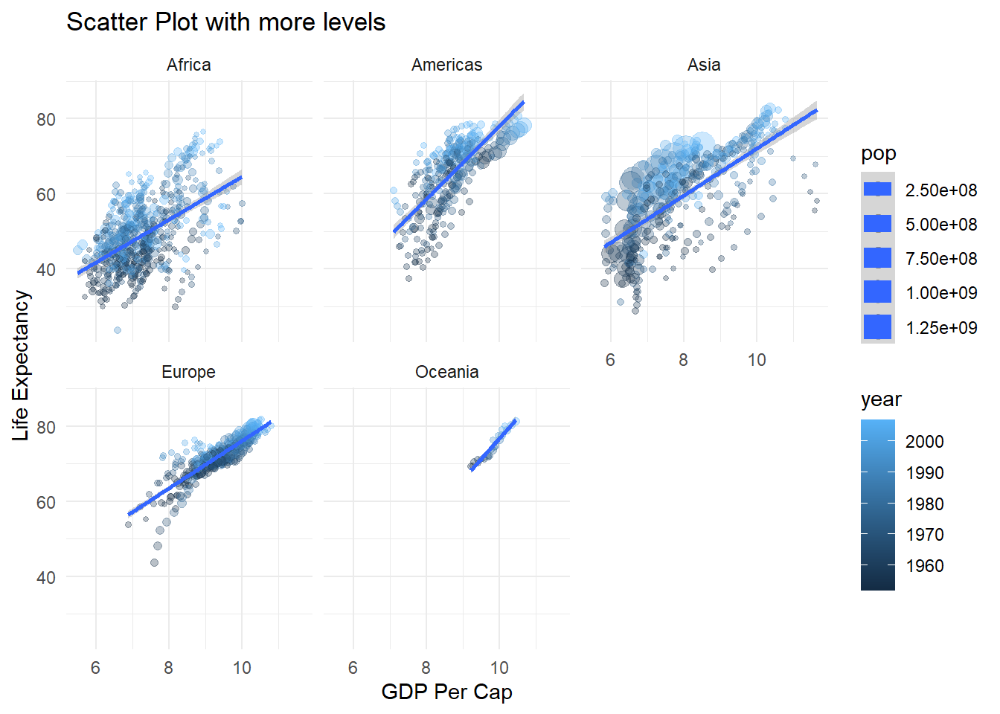

There are many ways you can visualize data, and selecting a way to visualize your data depends on what kind of data you have. For example, if you have geographic data, then using a map can be an option. The visual you pick also should be effective at telling the story for your stakeholders.
For the different visualizations, I will group them based on what they show:
Distribution
Comparison
Relationship
Composition
4.1Distributions
For this group the visuals all show the audience information about a distribution.
4.1.1 Density Plot
Here is a good resource that goes more in depth on density plots.
# load in tidyverse packagelibrary(tidyverse)# create some random dataset.seed(0)n =10000sample_means =rep(NA, n)for(i in1:n){ sample_means[i] =mean(rnorm(20, mean=0, sd=2))}# save this data into a data frame sample_means_df <-data.frame(sample_means)# create density plot sample_means_df %>%ggplot(aes(sample_means)) +geom_density(size = .5) +labs(title ="Density Plot", x ="Sample Means", y ="Density") +theme_classic()

4.1.2 Density Ridges
Using the ggridges package you can compare and see distributions together. Click here for the package documentation.
# create density ridges with 3 randomly sampled distributions samples_df %>%ggplot(aes(x = sample_means, y = sample_n, fill = sample_n)) +geom_density_ridges(alpha = .7) +labs(title ="Density Ridges Plot", x ="Sample Means", y ="Sample ID") +theme_classic()
Picking joint bandwidth of 0.0467

4.1.3 Histogram
Using a histogram is another common way to show a distribution. It may look like a “bar char” with many bars, however each “bar” is a bin, and it represents a range of numbers that falls within it’s respective bin. The height of the “bar” shows a count of how many values fall within a bin.
# create histogram with random data sample_means_df %>%ggplot(aes(x = sample_means)) +geom_histogram(bins =30) +labs(title ="Histogram", y ="Count", x ="Sample Means") +theme_classic()

4.1.4 Boxplot
Boxplots can be a useful way to show a distribution, but the distribution is hidden behind each box meaning it could be misinterpreted.
# create boxplots with random datasamples_df %>%ggplot(aes(x = sample_n, y = sample_means, fill = sample_n)) +geom_boxplot() +labs(title ="Boxplot") +theme_classic()

4.1.5 Violin Chart
Similar to a boxplot but shows the shape of a distribution better.
# create violin charts with random datasamples_df %>%ggplot(aes(x = sample_n, y = sample_means, fill = sample_n)) +geom_violin() +labs(title ="Violin Chart") +theme_classic()

4.2Comparisons
For this group the visuals compare insights for the audience.
4.2.1 Bar Chart
Bar charts are very simple and effective at conveying information, never underestimate the power of a bar chart.
# read in iris dataset iris_df <- iris %>%clean_names()# group the data by species, then summarize the avg petal width for each speciesiris_df %>%group_by(species) %>%summarize(avg_petal_width =mean(petal_width)) %>%ggplot(aes(x = species, y = avg_petal_width, fill = species)) +geom_col() +labs(title ="Bar Chart", y ="Avg Petal Width", x ="Species") +theme_classic()

4.2.2 Horizontal Bar Chart
Similar to a bar chart, but a horizontal version, can be useful but when viewing, stakeholders can more easily distinguish a difference in the vertical counterpart than in the horizontal bar chart. This is the same bar chart as above, created with + geom_col() but to rotate the plot I used the + coord_flip() function.
# create horizontal bar chartiris_df %>%group_by(species) %>%summarize(avg_petal_width =mean(petal_width)) %>%ggplot(aes(x = species, y = avg_petal_width, fill = species)) +geom_col() +labs(title ="Horizontal Bar Chart", y ="Avg Petal Width", x ="Species") +theme_classic() +coord_flip()

4.2.3 Line Chart
Line charts are essential when working time.
# read in chickweight datasetchick_df <- ChickWeight %>%clean_names()# filter and group by chick 1, 21, 45chick_df %>%filter(chick ==1|chick ==21|chick ==45) %>%group_by(chick) %>%ggplot(aes(x = time, y = weight, color = diet)) +geom_line(size = .8) +labs(title ="Line Chart", x ="Time", y ="Chicken Weight") +theme_classic()

4.3Relationships
4.3.1 Scatter Plot
Scatter Plots are great ways to visualize relationships within datasets. There are many different aesthetics you can control to add more layers to a scatter plot too.
This is an example of a simple scatter plot.
# load in datascatter_plot_df <- datasets::cars# create scatter plot scatter_plot_df %>%ggplot(aes(x = dist, y = speed)) +geom_jitter() +labs(title ="Simple Scatter Plot", y ="Speed", x ="Distance") +theme_classic()

A scatter plot with more layers can use aesthetics such as size, fill, shape, geom_smooth() or facet_wrap().
gapminder %>%group_by(country) %>%ggplot(aes(x =log(gdpPercap), y = lifeExp, col = year, size = pop)) +geom_point(alpha = .3) +geom_smooth(method ="lm") +facet_wrap(~continent) +labs(title ="Scatter Plot with more levels", x ="GDP Per Cap", y ="Life Expectancy") +theme_minimal()

4.4Composition
4.4.1 Pie Chart
Pie charts are useful when used properly, as a means of showing the composition categories etc. There should not be more than 5 items being displayed as it is hard to actualize the composition of something when there is lots of small pieces. 2-4 total “slices” is ideal for seeing how the data is made up for specific insights.